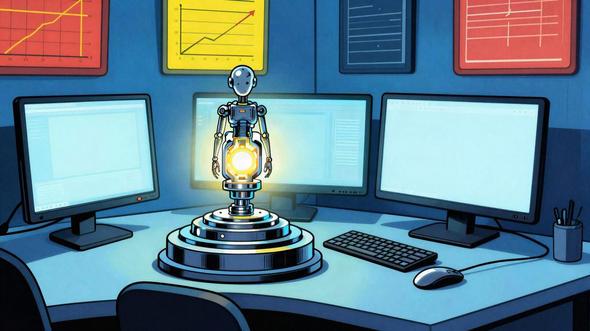

OpenAI je predstavio GPT-6.1 Terra: jeftiniji API i jače upravljanje računalom

OpenAI je predstavio GPT-6.1 Terra i tvrdi da je bolji u svakodnevnim uredskim zadacima, radu s računalom i obradi dokumenata. Model je od danas dostupan u ChatGPT Worku i Codexu, a developeri ga mogu pozvati i kroz OpenAI API pod oznakom gpt-6.1-terra. Tvrtka navodi i nižu cijenu te bolje rezultate na testovima.
OpenAI je predstavio GPT-6.1 Terra, novi model iz serije Terra koji je, prema tvrtki, posebno jak u komunikaciji i računalnim zadacima. Sam Altman je rekao da će model otvoriti „novu eru” računalnog rada. Model je od danas dostupan korisnicima paketa Plus, Pro, Enterprise i Edu u ChatGPT Worku i Codexu, a developeri ga mogu pozvati i kroz OpenAI API pod oznakom gpt-6.1-terra.
OpenAI tvrdi da GPT-6.1 Terra bolje rješava svakodnevne uredske poslove, od pisanja prijedloga i tumačenja tehničkih crteža do ispunjavanja tablica i montaže videa. Tvrtka ga opisuje kao model koji bolje balansira brzinu, sposobnosti i cijenu.
Cijena API-ja
Standardni API ima ove cijene: ulazni token stoji 1 dolar po milijunu, cacheirani ulazni token 0,05 dolara po milijunu, a izlazni token 5 dolara po milijunu. OpenAI navodi da je to 50 posto jeftinije od GPT-5.6 Terra i GPT-6.1 Sol. To bi developerima trebalo smanjiti trošak automatizacije zadataka, primjerice čitanja računa i upisa podataka u accounting software.
Tvrtka navodi i da GPT-6.1 Terra u ChatGPT Worku i Codexu bolje koristi iste limite korištenja. Prema OpenAI-ju, s istim paketom može odraditi više zadataka nego GPT-5.6 Terra, a i znatno više nego GPT-6.1 Sol ili GPT-6 Astra.
Na testovima računalne upotrebe i vizualnog razumijevanja model je, prema OpenAI-ju, ostvario bolje rezultate od GPT-5.6 Terra. Na benchmarku Agents' Last Exam u srednjem načinu zaključivanja rezultat mu je bio 15 postotnih bodova viši, uz otprilike trećinu troška u odnosu na GPT-5.6 Terra. U benchmarku OSWorld 2.1 model je također nadmašio najbolji rezultat GPT-5.6 Terra, uz niži trošak po zadatku.
OpenAI kaže i da je smanjio broj pogrešnih odgovora. U internom testu s promptovima koji često izazivaju greške stopa je, u nižem načinu zaključivanja, pala s 53,6 posto na 16,7 posto. U najvišem načinu pala je na 4,3 posto. Model je, prema tvrtki, bolji i u programiranju, a u nekim testovima približio se najboljim modelima iz serije, uz nižu cijenu.
Izvor: cnBeta